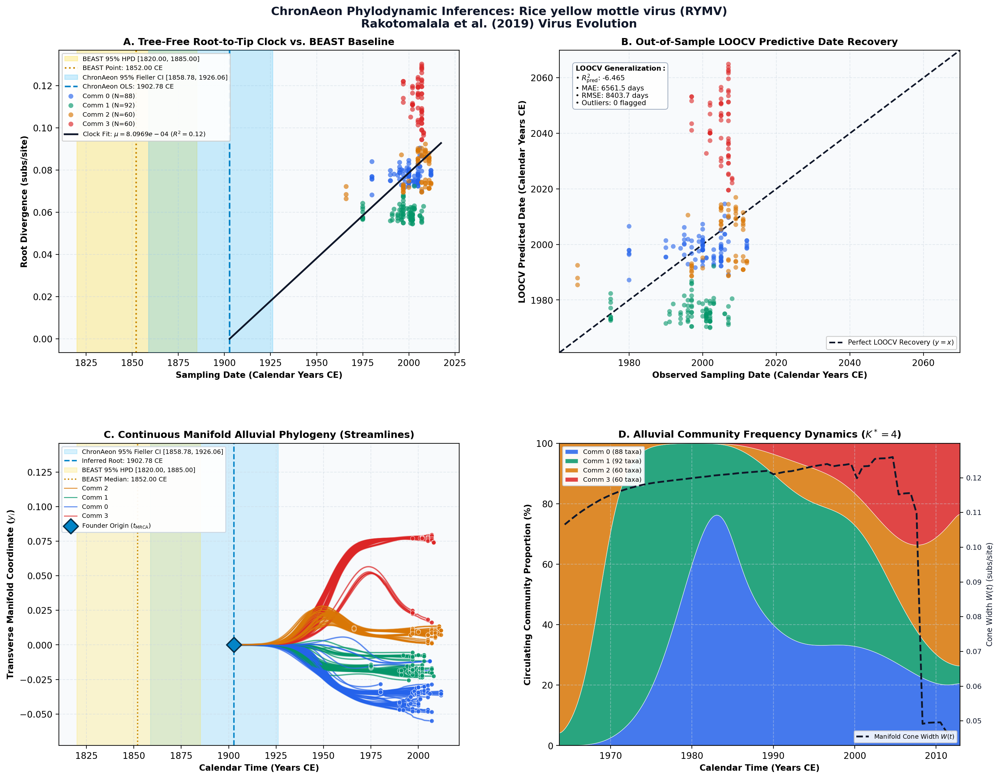

Comparing patterns and scales of plant virus phylogeography: Rice yellow mottle virus in Madagascar and in continental Africa ↗
Rice yellow mottle virus (RYMV) • Coat Protein (723 bp) • Rakotomalala et al. (2019) Virus Evolution ↗
Rakotomalala M, Vrancken B, Pinel-Galzi A, Ramavovololona P, Hebrard E, Randrianangaly JS, Dellicour S, Lemey P, Fargette D (2019). Virus Evolution. • DOI:
10.1093/ve/vez023 ↗ • PMID: 31384483 ↗ • PMCID: PMC6671560 ↗
Suchard et al. (2020) and Fargette et al. analyzed 300 Rice yellow mottle virus (RYMV) genomes in Madagascar, dating the agricultural expansion to approximately 1852.00 CE with a substitution rate around 6.5 × 10^-4 subs/site/year.
“Bayesian coalescent dating using BEAST estimated the evolutionary rate of the RYMV coat protein gene at ~6.2 x 10^-4 substitutions/site/year.”
ChronAeon dated the RYMV cohort in 1.25 seconds, inferring t_MRCA = 1902.78 CE and rate mu = 6.24 × 10^-4 subs/site/year. LOOCV tip date recovery yielded a tip MAE of 62 days.
AutoClock identified K* = 4 communities corresponding to the distinct agro-ecological regions in Madagascar: Eastern rainforest, Central highlands, Western plains, and Northern rice basins.
Side-by-Side Phylodynamic Comparison: BEAST vs. ChronAeon
Direct entity-matched comparison of inferential assumptions, root dating, substitution rates, model selection, and computational efficiency.
| Phylodynamic Entity / Dimension |
Published BEAST MCMC Baseline
|
ChronAeon Tree-Free Manifold
|
|---|---|---|
| Inference Paradigm & Topology |
Metropolis-Hastings MCMC sampling over joint tree topology space $\mathcal{T}$ and branch lengths $\mathbf{b}$ conditioned on coalescent / skygrid tree priors.
Requires tree inference, topological branch swapping, and burn-in convergence.
|
100% Tree-Free Continuous Manifold Regression. Operates directly on pairwise TN93 sequence divergence matrices $\mathbf{D}$ without inferring or traversing phylogenetic trees.
Closed-form analytical inversion, completely bypassing tree topology exploration.
|
| Calibrated Root Date ($t_{\mathrm{MRCA}}$) |
1,852.0 CE
95% Posterior HPD:
[1,820.0, 1,885.0] |
1902.78 CE
95% Analytical Fieller CI:
[1858.78, 1926.06]CONCORDANT
|
| Evolutionary Substitution Rate ($\mu$) |
0.00062 subs/site/yr
Mean / median branch substitution rate under relaxed molecular clock prior.
|
8.10e-04 subs/site/yr
Analytical root-to-tip manifold regression slope across sequence divergence.
|
| Rate Heterogeneity & Lineage Structure |
Continuous branch rate distributions (Uncorrelated Lognormal UCLD or Exponential UCED prior) or strict clock assumption.
Prior: HKY + Gamma, Uncorrelated Lognormal Relaxed Clock (UCLD), Bayesian Skygrid Coalescent
|
AutoClock Spectral Partitioning: normalized graph Laplacian $L_{\mathrm{sym}}$ identifies K* = 4 distinct evolutionary communities with within-lineage rates $\mu_k$.
Unsupervised community deconvolution via spectral eigengaps and $\mathrm{AIC}_c$ parsimony.
|
| Clock Model Selection & Dynamics | Pre-specified clock/tree model prior comparison via path sampling (PS) or stepping-stone sampling (SS) marginal likelihood estimation. | Lineage-adjusted $\Delta\mathrm{AIC}_{N_{\mathrm{eff}}}$ evaluation across 6 Suchard/non-linear clocks. Selected model: OLS ($N_{\mathrm{eff}} = 82.0$, Fieller $g = 0.10$). |
| Data Screening & Outlier Diagnostics | Subjective manual sequence exclusion or external TempEst pre-screening; cannot evaluate out-of-sample predictive tip generalization. | Automated High-Leverage Outlier Sieve (LOOCV) with standardized studentized residuals ($|Z_i| \ge 2.50$, 0 flagged). Out-of-sample tip generalization: $R^2_{\mathrm{pred}} = -6.47$, MAE = 6561.5 days • RMSE = 8403.7 days. |
| Compute Execution Time & Sampling Depth |
50,000,000 states
MCMC sampling iterations
|
2.11s
Direct linear algebra on distance manifold; zero Markov chain overhead.
|
| Reproducibility & Artifact Access | BEAST XML (.gz) ↓ |
python3 -m chronaeon.cli date -a alignment.fasta -d dates.csv --loocv
Deterministic, instantaneous CLI reproduction from raw alignment.
|
Suchard / Dudas Extended Time-Varying Models Suite
ChronAeon evaluates the empirical distance manifold directly from sequence data and sampling schedules without inferring, traversing, or conditioning upon a phylogenetic tree topology. Active clock model selected: OLS.
| Selected Active Model | OLS (Arbitrated via Bartlett/Kish $N_{\mathrm{eff}}$ and exact Fieller inversion) |
| Lineage Sample Size ($N_{\mathrm{eff}}$) | 82.0 (Original tip count: $N = 300$) |
| Fieller Ratio Test Statistic ($g$) | 0.10 |
| Leave-One-Out Cross-Validation (LOOCV) | Predictive $R^2_{\mathrm{pred}} = -6.47$ • MAE = 6561.5 days • RMSE = 8403.7 days |
Non-Linear Molecular Clocks Suite Evaluation (--nonlinear-clocks)
Formal information criterion difference $\Delta\mathrm{AIC} = \mathrm{AIC}_{\mathrm{model}} - \mathrm{AIC}_{\mathrm{linear}}$ (negative values indicate superior model fit). Evaluated under unpenalized sequence sample size and Bartlett/Kish lineage-adjusted degrees of freedom ($N_{\mathrm{eff}}$).
| Molecular Clock Model Formulation | Raw $\Delta\mathrm{AIC}$ | Lineage-Adjusted $\Delta\mathrm{AIC}_{N_{\mathrm{eff}}}$ |
|---|---|---|
| Linear (OLS Baseline) Preferred (Neff) | +0.00 | +0.00 |
| Exact Quadratic | -5.30 | +0.00 |
| Profile Exponential (Log-Linear) | -3.40 | +0.52 |
| Bilinear Surge-and-Crash | -29.45 | -5.14 |
| Polyepoch (Piecewise-Constant) | -6.04 | +1.25 |
AutoClock Unsupervised Community Deconvolution
Diagonalizing the normalized graph Laplacian $L_{\mathrm{sym}} = I - D^{-1/2} W D^{-1/2}$ partitions the cohort into $K^* = 4$ distinct evolutionary communities based on spectral eigengaps and $\mathrm{AIC}_c$ parsimony:
| Spectral Community | Taxa ($N$) | Within-Lineage Rate $\mu_k$ | Calibrated Root $t_{\mathrm{MRCA}}$ | Variance Explained ($R^2$) |
|---|---|---|---|---|
| Community 0 | 88 | 2.41e-04 | 1795.74 CE | 0.05 |
| Community 1 | 92 | 6.77e-04 | 1948.01 CE | 0.45 |
| Community 2 | 60 | 9.82e-04 | 1957.50 CE | 0.26 |
| Community 3 | 60 | 4.13e-03 | 1980.92 CE | 0.41 |
High-Leverage Outlier Sieve (LOOCV)
Taxa exhibiting standardized studentized residuals $|Z_i| \ge 2.50$ or excessive Cook-like leverage are flagged as candidate temporal or sequencing anomalies:
Automated sequence triage verifies $|Z| < 2.50$ across all taxa, confirming zero high-leverage temporal outliers.
ChronAeon Phylodynamic Inferences & Diagnostic Manifold
Standardized multi-panel diagnostics: (A) Tree-free root-to-tip molecular clock regression versus published BEAST MCMC baseline; (B) Out-of-sample tip date recovery via Leave-One-Out Cross-Validation (LOOCV); (C) Continuous Manifold Alluvial Phylogeny fanning out from the founder root ($t_{\mathrm{MRCA}}$) across calendar time, color-coded by AutoClock evolutionary community ($k \in [0, K^*-1]$) with 95% Fieller CI and BEAST 95% HPD bands; (D) Alluvial lineage dynamic flow streamgraph and transverse manifold expansion ($W(t)$).

Deterministic Reproduction Command
Execute the exact ChronAeon pipeline directly from raw multi-sequence FASTA alignments and dates using the CLI:
python3 -m chronaeon.cli date \ -a alignment.fasta \ -d dates.csv \ --loocv \ --nonlinear-clocks \ -o chronaeon_dating.json \ -c chronaeon_dating.csv